BELL SCHEDULE
| Time | Transitional Kindergarten & Kindergarten Only | Time | 1st - 5th Grade Monday, Tuesday, Thursday, and Friday | |
|---|---|---|---|---|
| 7:45 AM - 8:00 AM | Breakfast in the cafeteria | 7:45 AM - 8:00 AM | Breakfast in the cafeteria | |
| 8:00 AM - 8:10 AM | supervised recess | 8:00 AM - 8:10 AM | supervised recess | |
| 8:10 AM - 8:15 AM | First bell for 1st period | 8:10 AM - 8:15 AM | First bell for 1st period | |
| 8:15 AM - 9:40 AM | Tardy bell for 1st period | 8:15 AM - 9:40 AM | Tardy bell for 1st period | |
| 9:40 AM - 10:00 AM | Morning recess | 9:40 AM - 10:00 AM | Morning recess (1st-2nd) | |
| 10:00 AM - 10:20 AM | Morning recess (3rd-5th) | |||
| 11:20 AM - 11:40 AM | Lunch recess | 11:20 AM - 11:40 AM | Lunch recess (1st-2nd) | |
| 11:40 AM - 12:00 PM | Lunch | 11:40 AM - 12:00 PM | Lunch (1st-2nd) | |
| 12:00 PM - 12:20 PM | Lunch recess (3rd-5th) | |||
| 12:20 PM - 12:40 PM | Lunch (3rd-5th) | |||
| 1:00 PM | School dismissal | 1:37 PM or 1:07 PM | Wednesday or Minimum Day | |
| 2:35 PM | School dismissal |
EMPLOYEES
-
Erika Sauder Principal esauder@gusd.com (707) 857-3410
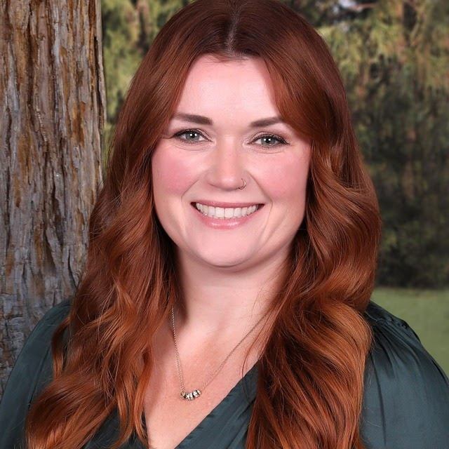
-
Piedad Flores Site Secretary pflores@gusd.com (707) 857-3410
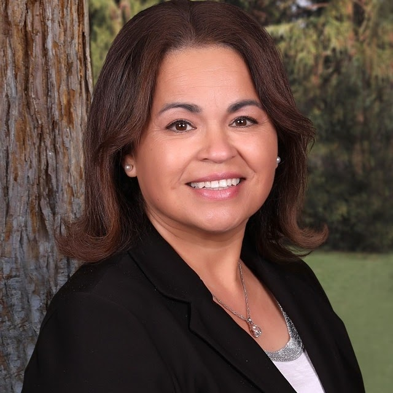
- Nigeria Gallardo TK & Kindergarten ngallardo@gusd.com
-
Connie Soldate 1st and 2nd Grade csoldate@gusd.com
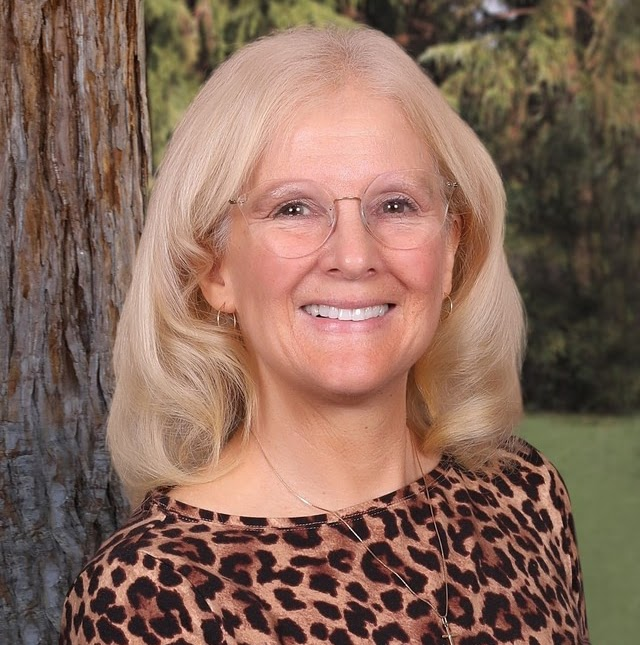
-
Sabine Canto-Adams 3rd Grade scanto-adams@gusd.com
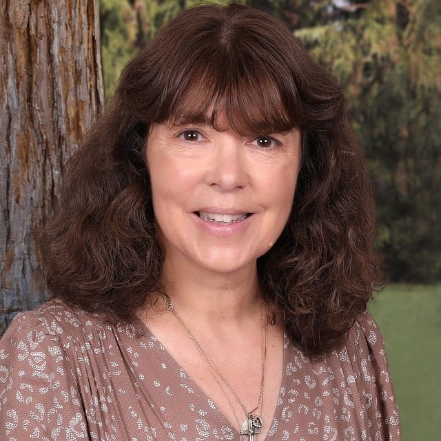
-
Gianni Guzman 4th Grade gguzman@gusd.com
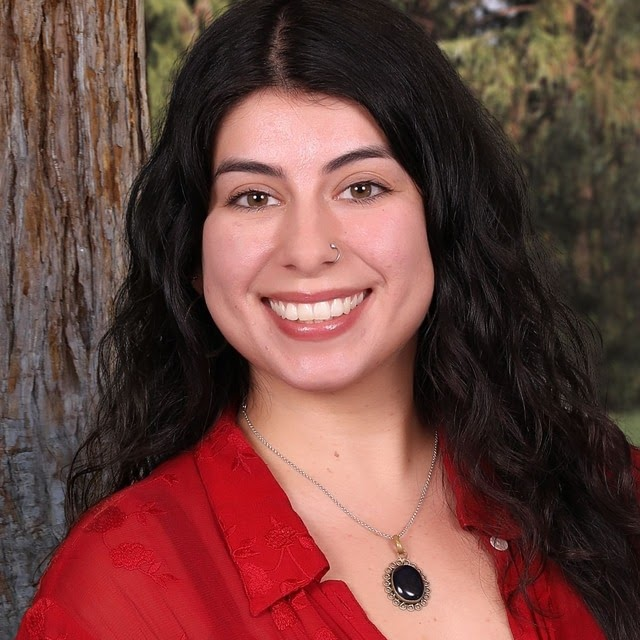
-
Hannah Knox 5th Grade hknox@gusd.com
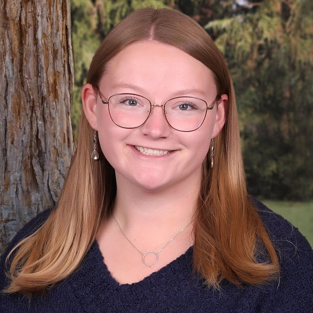
-
Rebecka Quick Ed. Specialist rquick@gusd.com
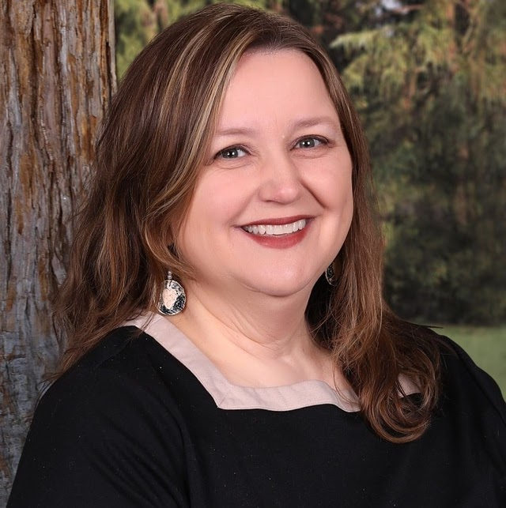
- Tiffany Love Hutchins Librarian thutchins@gusd.com
- Norma Diaz Temporary Support Assistant ndiaz@gusd.com
-
Sara Schuman Instructional Assistant sschuman@gusd.com
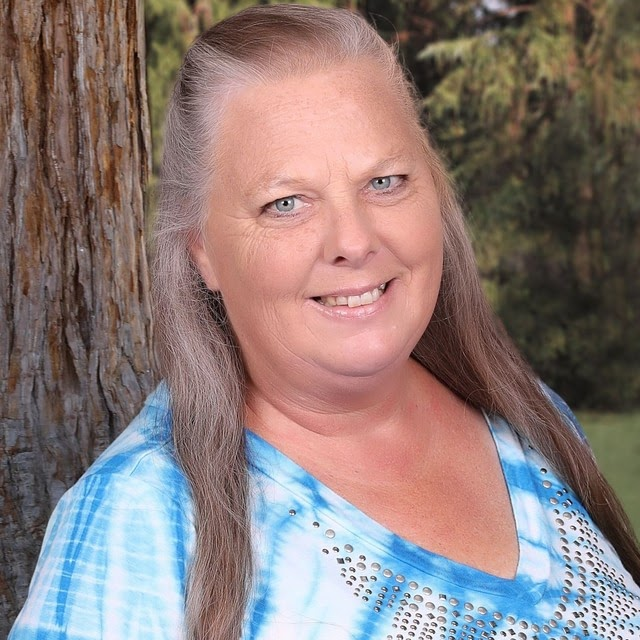
-
Lesmy Smith Instructional Assistant lsmith@gusd.com
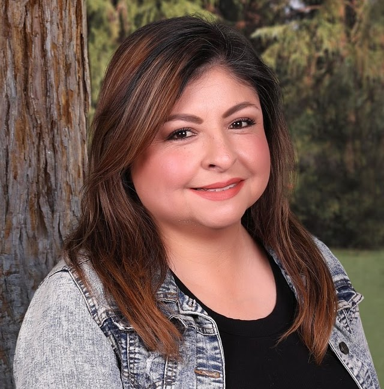
- Olivia Gonzalez-Cruz RSP Assistant ogonzalez-cruz@gusd.com
-
Linda Love Food Service llove@gusd.com
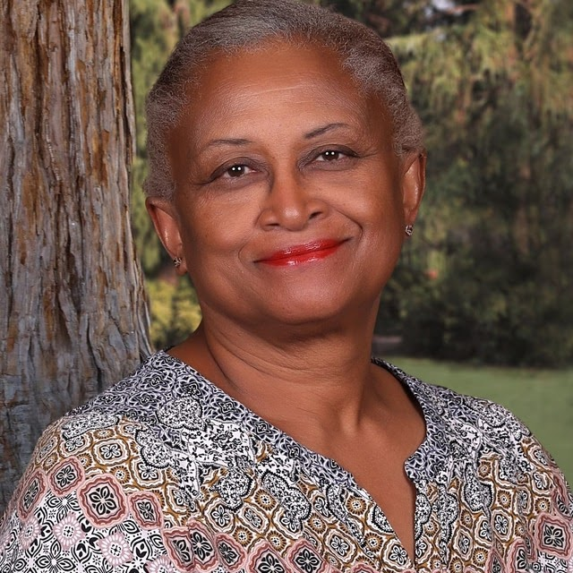
-
Lupe Lopez, Custodian llopez@gusd.com
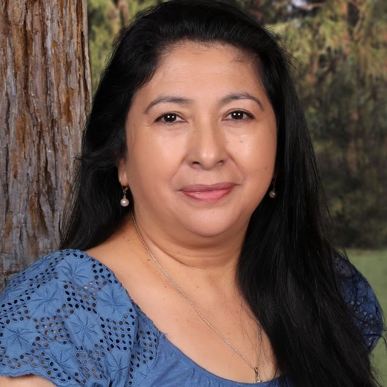
-
Micaela Quintana Speech and Language Pathologist mquintana@gusd.com
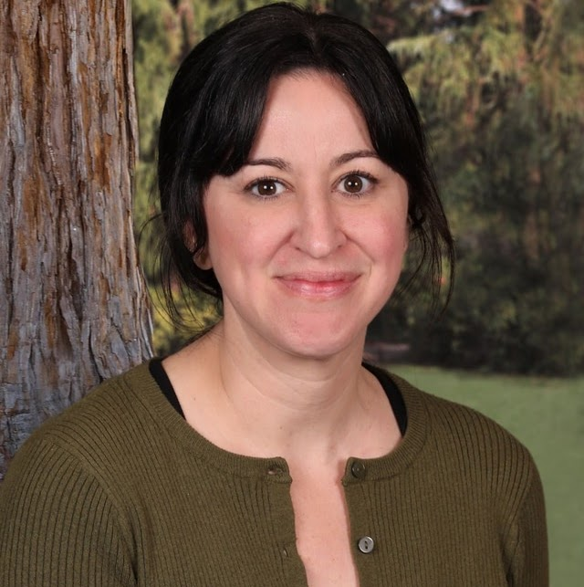
-
Tracy Petersen Garden Teacher tpetersen@gusd.com
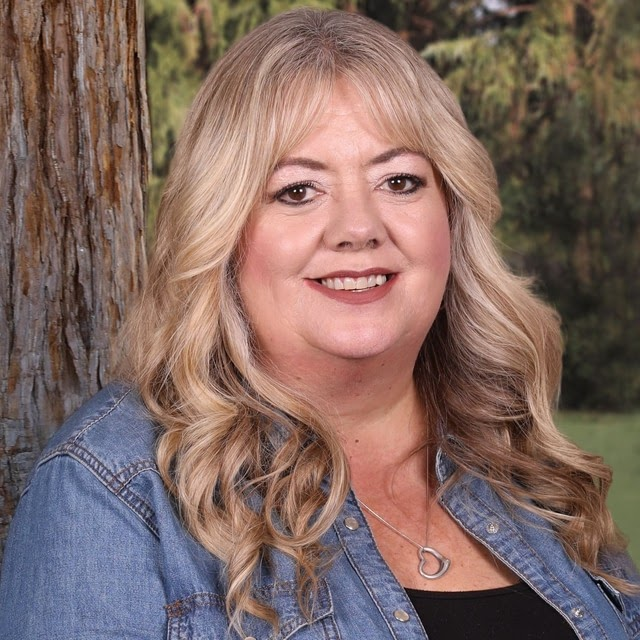
-
Jason Lish Lead Maintenance Supervisor jlish@gusd.com
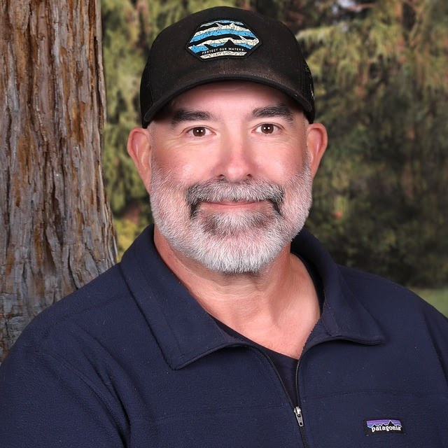
- Christa Fox-Sharp IT/Technical Coordinator cfox-sharp@gusd.com
ENRICHMENT PROGRAMS
Bi-Weekly Garden Class
At Geyserville Elementary, every student participates in our vibrant garden program twice a month, taking full advantage of our ever-growing school garden. Throughout the year, students harvest fresh produce and engage in hands-on activities like tasting, drawing, measuring, and even creating recipes using the foods they help grow. Our garden is a living classroom that fosters learning, creativity, and a deeper connection to nature!
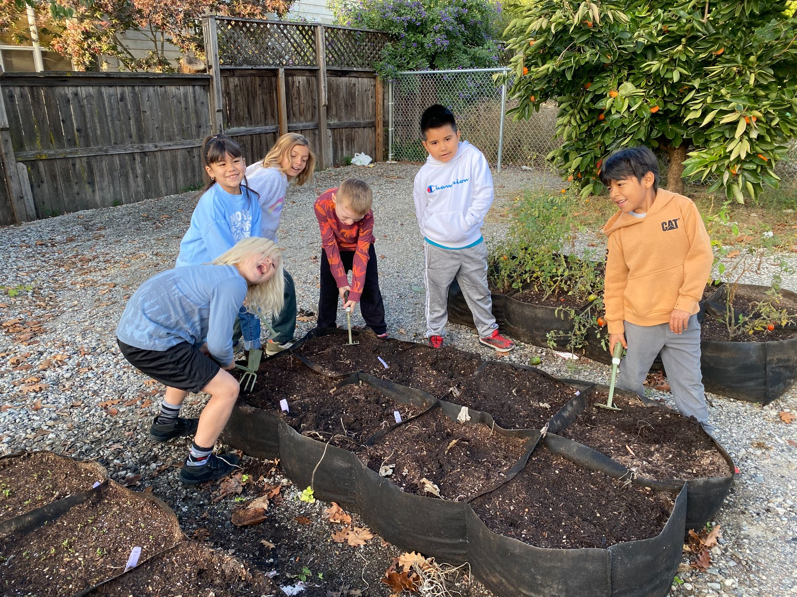
STEM: Hands-on Learning
At Geyserville Elementary, students engage in exciting hands-on science and STEM activities each month with Mr. Bradski. These interactive lessons inspire curiosity and problem-solving as students explore scientific concepts through real-world experiments and challenges. From building structures and designing simple machines to experimenting with chemistry and physics, students develop critical thinking skills and a love for discovery. Mr. Bradski’s STEM activities make science come alive, fostering creativity and innovation in our young learners!
Art and Soul
Geyserville Elementary is proud to partner with Art and Soul, a nonprofit based in Santa Rosa, and with the generous support of the Geyserville Educational Foundation, we offer our students enriching weekly classes throughout the year. This year, our program is designed to offer music once a week for all students for the entire school year. Beginning in the second trimester, Art and Soul brings the joy of dance to GES.

During the third trimester students explore various mediums such as paint, oil pastels, and clay. This dynamic program nurtures creativity and artistic expression in all our students!
POSITIVE BEHAVIOR INTERVENTION AND SUPPORT
Positive Behavioral Interventions and Supports (PBIS) is an evidence-based, tiered framework for supporting students’ behavioral, academic, social, emotional, and mental health. When implemented with fidelity, PBIS improves social emotional competence, academic success, and school climate. It also improves teacher health and wellbeing. It is a way to create positive, predictable, equitable and safe learning environments where everyone thrives. We use ‘students’ to refer to all children and youth in any educational or therapeutic setting (e.g., K-12 school, early childhood program, treatment program, juvenile justice program). Learn more about PBIS in schools, classrooms, and early childhood programs on those topic pages.


SONOMA ENVIRONMENTAL EDUCATION COLLABORATIVE
We are a committed Environmental Education Pathways School presented through SEEC. With the help of the Sonoma Environmental Education Collaborative (SEEC), we are working with multiple partner organizations to create connected learning across all grades. This means that we are offering our students in every grade, hands-on outdoor education experiences that build upon each other-- bringing the classroom out into nature! Whether it is learning about our local watershed, habitats, or climate change, our students are gaining the knowledge, skills, and attitudes to become the next generation of stewards!
To learn more about SEEC and the Pathways Project, head over to their website! Pathways Project — Sonoma Environmental Education Collaborative.
STUDENT/PARENT HANDBOOK


TECHNOLOGY
At GES, we are committed to providing our students with a well-rounded education that prepares them for success in the 21st century. As part of this commitment, we recognize the importance of integrating technology into our curriculum to enhance learning and engagement.We recognize the importance of using supplemental online supports to enhance classroom learning and offer flexibility for students and families. Our curriculum is enriched by a variety of digital tools that provide personalized instruction in key areas like reading, math, science, and social studies. These programs help teachers tailor lessons to meet the needs of each student, offering engaging, interactive activities that boost understanding and retention.
One of the greatest benefits of using online supports is the ability for students to continue their learning from home. Whether they're completing assignments, practicing new skills, or exploring topics that interest them, students can access these programs anytime, anywhere. This flexibility helps reinforce concepts learned in the classroom, ensuring consistent academic growth.
By integrating these supplemental resources into our curriculum, we empower students to take control of their learning while providing families with additional tools to support their child's education outside the classroom.
Logging in at Home
Students at Geyserville Elementary can easily access all the educational programs we use at school by logging in through their Clever account. Clever serves as a single sign-on portal, allowing students to access programs like Wonders, Lexia, MyOn, and more from one place.
To get started, simply click the Clever logo to sign in to your student account. Once logged in, you'll have full access to the learning tools and resources used in class, making it easier to continue your learning from home.
At Geyserville Elementary, we are dedicated to providing students with engaging and effective learning tools. This year, we will continue using key programs to support literacy, math, and science, including:
Wonders and Wonders/My Math: A comprehensive program to strengthen reading, writing, and math skills.
Mystery Science: A hands-on science curriculum that makes learning fun and interactive.
Lexia: A personalized approach to reading instruction that helps students at all levels improve their literacy skills.
Studies Weekly: A dynamic and engaging social studies program that brings history and civics to life for our students.
We are also excited to introduce Mystery Writing, a new and free program designed to spark creativity and enhance students' writing skills.
Under the Renaissance suite of programs, we’ll continue using:
Star Reading, Star Early Literacy, and Star Math for tracking progress in key areas.
Accelerated Reader (AR) to encourage a love for reading through personalized book choices and quizzes.
MyOn, a digital library offering students access to thousands of books to read anytime, anywhere.
Freckle, an adaptive program that designs fun and engaging lessons for students based on their Star Reading and Math scores, providing personalized learning paths in math and ELA.These programs work together to create a rich, well-rounded learning experience for all our students.